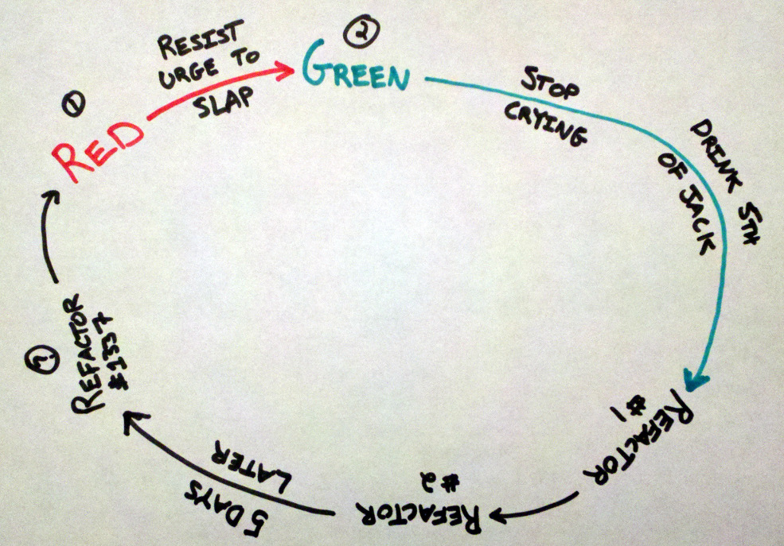

"Writing the Code You Wish You Had"
Aaron Kromer
Twitter:
@cupakromer
Github:
cupakromer
IRC:
cupakromer in #rspec, #arlingtonruby, #ruby
What this talk is NOT
- Explaining how to fall asleep and dream about code (I wish)
-
Telling you:
"You are doing it wrong!"
(but you probably are anyways)
- A list of spells or recipes about how to write better
code
What this talk IS
Telling you to:
- STOP IT
- Throw it away
- Not to refactor (well not really, but yeah don't refactor)
- Things won't work; that's a good thing!
Don't Let This Be Your Code

You Do This Right?

Not going to discuss testing.
We all know you should be doing it.
This gives you the confidence to actually write your dream code.
next
Otherwise This Happens

So please just do it already.
Your peers and future self will thank you.
next
Seriously
Stop It!
Mad TV Bob Newhart Skit - Mo Collins
Stop Doing
Patching code
Shoe horning code
next
This is What You've Done

STOP IT!
Exerting the force on it
next
In Summary

Writing the ugly code that makes you and your peers cry
next
I Mean It
Just do it the right way the first time!
STOP AFTER 15 SECONDS
There's no time like now
You won't go back and fix it later
You're future self and co-workers will thank you
Throw It Away

ggdG:w
It's Right Here

Sometimes you just have to start from scratch.
It's okay to delete it.
Just don't ALWAYS do this. Use your judgement.
This Is Refactoring

But let's be honest, this isn't what happens.
next
What Really Happens

This isn't refactoring.
Refactoring is making small measured changes to improve code.
Using techniques such as:
- Extract Method
- Inline Method
- Introduce Explaining Variables
- Extract Class
Just call this what it really is...
next
It's Called a Re-write

How You Think You Pseudo Code

How You Really Pseudo Code

Bad Pseudo Code - Example
# For numbers 1 to 100
# If multiple of 3, print "Fizz"
# Else If multiple of 5, print "Buzz"
# If multiple of both, print "FizzBuzz"
# Print new line
Bad Pseudo Code - Now Modify It
# For numbers 1 to 100
# If multiple of 3, print "Fizz"
# Else If multiple of 5, print "Buzz"
# Else If multiple of 7, print "Qux"
# Else If multiple of 3 and 5, print "FizzBuzz"
# Else If multiple of 3 and 7, print "FizzQux"
# Slams head into wall
# Don't forget to print the new line
This Was A Solution Online ಠ_ಠ
for i in 1..100
if i % 15 == 0 then
print "FizzBuzz"
elsif i % 3 == 0 then
print "Fizz"
elsif i % 5 == 0 then
print "Buzz"
else
print i
end
print "\n"
end
So what happens at this point?
next
You Look In The Mirror At Yourself

Just Say "NO!" to Pseudo Code

Tend to start well at a high level.
Then start thinking about details.
Then more details.
Then you fill in the comments.
And you get crap.
next
Bad Pseudo Code - Another Example
# Searches for query in a set of pages, every word
# is searched independently, and then results of all
# search operations are concatenated.
# split query into separate words
# for each word in the query
# get pages containing the word
# from the database
# for each page
# if this page is in the score table
# add current word occurrences on the
# page to the score table for given page
# if this page is not in the score table
# add the page to the score table
# and store current word occurrences for
# this page in the score table
# create container for pages to return
# for each page in the score table
# retrieve page info from database and store it
# in the container
# return the container
Take a Cue From Other Language Devs

Take a look at videos of "Full Throttle" and "Play-by-Play" screen casts from TekPub and Destroy All Software.
The tools in some of the Java and dot Net editors make it silly easy to generate methods and classes that don't exist.
Not that it's hard in Ruby, but some of the other editors are just hot keys.
Notice that these devs: Just Write Code!!
Don't worry about existing APIs (per se), write to the domain.
This isn't new, it just seems to get lost in the day-to-day jobs.
next
Luckily You Have Ruby

So you can just write what would have been pseudo code as basically normal code.
This will help flush out:
- tricky areas
- domain objects taken for granted
- overly complex ideas simplified
- simple ideas that are more complex
The result will be based on your Ruby skill level.
The Ruby community, generally, is always striving to be better. Use this to your advantage.
Just Write What You Want
max = 100
puts (1..max).map(:to_fizzbuzz)
# lib/ext/fixnum.rb
require "active_support/core_ext/object/blank"
class Fixnum
def to_fizzbuzz
fizzbuzz_tags.join.presence || self
end
private
ALTS = { Fizz: 3, Buzz: 5, Qux: 6 }
def fizzbuzz_tags
ALTS.select{ |_, divisor| modulo(divisor).zero? }.keys
end
end
Adapted from
extensibly_fizz.rb
by
Brook Riggio
So What's Stopping You?

Write You Dream Code
 ←
→
←
→
/
#